文字
背景
行間

カテゴリ:国際交流
 鹿山会後援オランダ研修（２） 現地11月20日（月）
鹿山会後援オランダ研修（２） 現地11月20日（月）
いよいよYouth Conferenceが始まりました。今年は日本の他に、ポーランド、フィンランド、ドイツ、イタリアの交流校の学生が参加しています。

鹿山会後援オランダ研修出発 11月17日(金)～11月26日(日)
鹿山会後援オランダ研修出発 11月17日(金)～11月26日(日)
オランダ研修に1年生５名が参加しました。成田国際空港では御後援頂いている鹿山会の方も見送りに来てくださり、代表生徒が充実した研修への抱負を述べて出発しました。
18日（土）は午前中ライデンのシーボルトハウスや市内を見学し午後に移動、ウィンシュホーテンにあるドラードカレッジのホストファミリーと週末を過ごしています。
20日（日）からは欧州他国からの生徒も交えた1週間にわたるYouth Conferenceに参加します。
 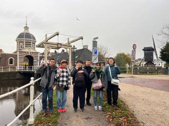
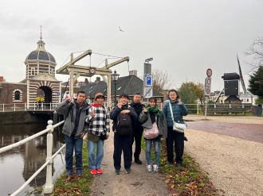
海外理解促進のための講演会
海外理解促進のための講演会 令和５年１１月１７日（金） １学年
「異文化理解と国際協力」滝沢光太郎氏
ＪＩＣＡ青年海外協力隊員としてパプアニューギニアで理学療法を行った滝沢氏が、現地での人々との交流、現地の文化・習慣・環境を生かしたリハビリに取り組んだ体験を通して考える異文化理解・国際協力についてお話くださいました。参加者は大いに刺激を受け、終了後の質疑応答も活発に行われました。
感想より
・異文化理解は相手とのコミュニケーションの過程に生じる副産物であるというところになるほどと思った。色々なことに挑戦して経験を積み、自分の考えを広げていきたい。
・自分の価値観で優しさを押し付けてしまうと、他の価値観を持つ人を否定してしまうことや、ありがた迷惑になりかねないことが分かった。そうならないためにも自分の知識の中で完結させることなく、相手の状況、価値観、文化など様々なことを尊重することが大切だと思った。また、勝手な考え方からの優しさを押し付けるのではなく、持続可能なものにしていくにはどうすればよいか一緒に考えることが大切だと思った。
・貧困や戦争、紛争、教育格差やジェンダーなどの問題は、問題を知っているだけでは解決には繋げられないから、それが起こる背景をよく知らないといけないということをとても考えさせられた。表面だけ知って語るのではなく、現地に行ったり専門的な知識を得て、初めて考えることがスタートできると思ったので、留学したいと思った。
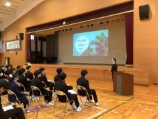 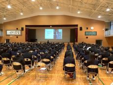
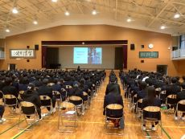
 ブリティッシュヒルズ宿泊研修
ブリティッシュヒルズ宿泊研修
9月29日（金）から10月1日（日）まで、45人の1年生が参加し、ブリティッシュヒルズ国内英語宿泊研修が行われました。朝には霧が立ち込め、まるで中世のイギリスにいるかのような雰囲気の中で英語研修が行われました。英語でのチェックインから始まり、Survival Englishなどのウォームアップアクティビティ、論理的思考に基づく問題解決法を学ぶRAVENメソッド、新商品の開発とプレゼンテーションを行うLion's Den、そしてイギリスのゲームやスポーツ体験などに取り組みました。


 Global Studies Program 8/21〜8/24
Global Studies Program 8/21〜8/24


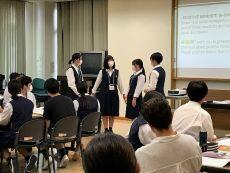


 ツェツィリアン・ギムナジウムの先生方来校
ツェツィリアン・ギムナジウムの先生方来校
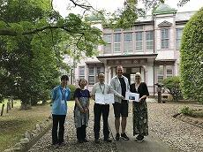 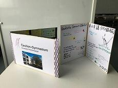 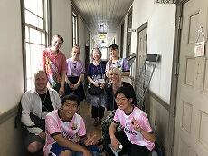

 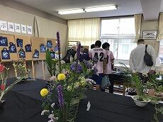
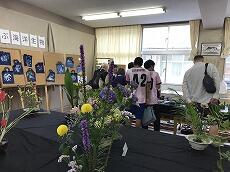 


2023年6月23日（金）台湾師範大学生訪問
千葉大学を訪問中の台湾師範大学の先生１名、学生８名が千葉大学教育学部のホーン先生と共に来校され、英語の授業(3A,1G）や家庭科の選択授業での調理実習や体育など様々な授業の様子を参観しました。英語の授業ではグループ活動に参加し、生徒の質問に答えて授業で扱っている話題に関しての台湾での現状を紹介してくださるなどし、楽しい交流のひと時を過ごしました。
 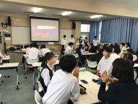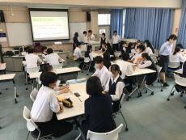
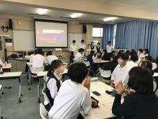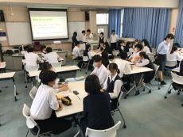


 鹿山会後援シンガポール海外研修報告会 3月20日（月）
鹿山会後援シンガポール海外研修報告会 3月20日（月）


鹿山会後援シンガポール海外研修
１月２５日（水）～２８日（土） ３年ぶりにシンガポール研修を実施することができ、普通科、理数科の２年生１３名が参加しました。
<セントジョセフ・インスティテューション(SJI)訪問・交流>
SJIにとってもコロナ禍後最初の海外交流校の訪問だったそうです。SJI生案内による校内の見学、互いの学校や文化紹介、ゲームなどをしながらのice-breaker、課題研究発表会の後、昼食を頂いた際には春節の風習も体験させてもらうなど、楽しく充実した交流でした。SJIの皆さんがスーツケースを運んでくれたり、生徒会長さんが先生方と空港に見送りに来てくれたり等数々の気遣いには唯々感謝です。


＜クレア（自治体国際化協会）・シンガポール事務所訪問＞
クレアの活動やシンガポールの民族融和政策について説明をしていただき、佐倉校生の課題研究発表に対し感想・助言をいただきました。準備の甲斐あって、発表は言うまでも無く、英語でのQ&Aにも適切に対応できました。


 12月14日(水)セントジョセフ・インスティテューションのタン先生来校
12月14日(水)セントジョセフ・インスティテューションのタン先生来校
シンガポール海外研修で交流しているセントジョセフ・インスティテューション（SJI）の国際交流部長タン先生が来校されました。授業見学の後、来年１月にシンガポールを訪問する生徒の案内で部活動の様子も見学されました。
また、同校主催のオンライン国際交流行事 「CURA 2022」（10/22土～11/12土）に本校3年生1名参加し、文化交流やSDGｓに関するプレゼンテーション等を行いました。
（SJIの他に交流校フィリピン3校、香港3校、韓国２校、日本２校合計６６名参加）